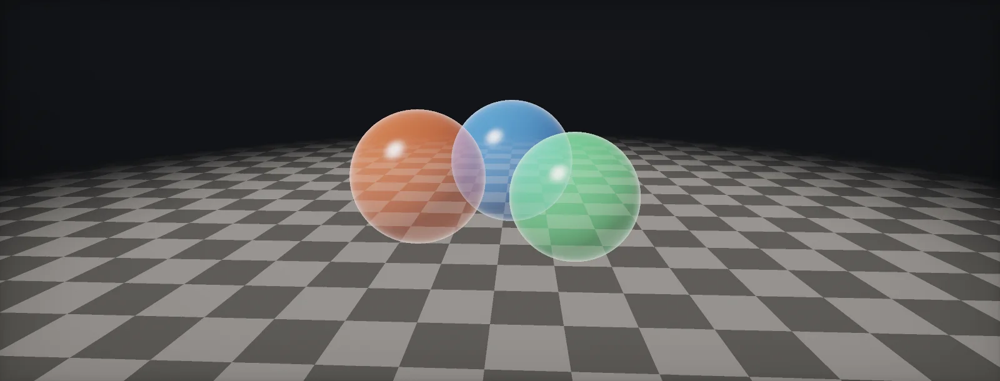

Transparency and Alpha
Glass, smoke, foliage and fades all need something to show through. This unit explains what the GPU does with alpha, why order matters, and the four ways around sorting.

What alpha means
Opaque surfaces simply replace the pixel behind them. A transparent surface has to mix with it, and the fourth channel of a colour, , says how much: 1 covers the background completely, 0 leaves it untouched. The GPU does the mixing after the pixel shader, when it writes the colour into the render target (render targets), so it can read what is already there.
The standard mix is the . It is exactly a lerp from the background to the new colour, by alpha:
The new colour is called the source, the colour already in the target the destination. Every channel (red, green, blue) is mixed the same way, independently (colours as numbers). Mixing has to happen in linear values to look right (linear and sRGB).
Blend modes are one formula
The blending hardware always computes the same thing: result = src · SrcFactor + dst · DstFactor. A blend mode is just a choice of the two factors. The over operator uses (SrcAlpha, OneMinusSrcAlpha); fire and glows use additive (One, One), which only ever brightens; dirt and shadows use multiply (DstColor, Zero), which only ever darkens:
// Unity ShaderLab blend states for the four modes above Blend SrcAlpha OneMinusSrcAlpha // alpha (over) Blend One One // additive Blend DstColor Zero // multiply Blend One OneMinusSrcAlpha // premultiplied alpha
Additive and multiply have a useful property the over operator lacks: the order of the layers does not matter, because adding and multiplying do not care about order. The next chapter shows why that matters so much.
Why the order matters
Draw a red layer and then a blue layer over the background, and you get a different colour than blue first and red second: the over operator puts more weight on whatever is drawn last. The only correct order is back to front. Try both:
Engines therefore draw opaque objects first, then sort the transparent objects by distance and draw them from far to near. Sorting is per object, by the distance of its centre, not per pixel. That breaks in three common cases: two transparent objects that intersect; a large object (water, a glass facade) whose centre is behind a small one in front of it; and a single mesh whose own triangles overlap (hair cards, a glass bottle). Every transparent layer is also shaded in full, which is why transparency is the main source of overdraw.
Set Surface Type: Transparent. Sorting Priority overrides the distance sort per material. Transparent Depth Prepass and Postpass write depth for transparents, which fixes self-sorting in many single-mesh cases and lets transparents receive depth-based effects.
Set Surface Type: Transparent and pick a Blending Mode (Alpha, Premultiply, Additive, Multiply). Sorting Priority (or the render queue) overrides the order. Transparent objects do not write depth by default.
Blend modes Translucent, Additive and Modulate. Translucency Sort Priority on the component overrides sorting; Separate Translucency and the Translucency Pass choose when they draw relative to depth of field.
Premultiplied alpha and dark fringes
A leaf texture has opaque green texels next to fully transparent ones. The transparent texels still store some colour, usually black. When the GPU filters between a green and a transparent texel, it blends the colours too, so the edge becomes half green, half black, at half alpha. Drawn with the over operator, that black shows up as a dark fringe.
stores colour already multiplied by alpha. A transparent texel is then (0, 0, 0, 0) by definition, filtering mixes the right amounts, and blending uses (One, OneMinusSrcAlpha):
A second bonus: with premultiplied alpha, one blend state can do both normal and additive blending. A texel with colour but alpha 0 adds light without covering anything, which is how many particle systems mix smoke and fire in one texture.
Alpha test and thinning foliage
Foliage, fences and hair cards usually avoid blending altogether. throws a pixel away when its alpha is below a cutoff (clip(alpha − cutoff)). The rest is drawn as fully opaque: no sorting, it writes depth and receives shadows. The cost is a hard edge, and that the GPU cannot always reject hidden pixels before running the shader.
Alpha test has one classic bug. Mip levels average neighbouring texels, so a thin, fully opaque twig next to transparent texels becomes a wide, half-transparent texel in the next mip. Below the cutoff, it disappears:
That is why trees thin out and go bald in the distance. The fix is to rescale the alpha of each mip so that the fraction of texels above the cutoff stays the same as in mip 0 (coverage-preserving mips), an import option in most engines.
Enable Alpha Clipping on the material. In the texture importer, Mip Maps Preserve Coverage with an Alpha Cutoff Value equal to the material's keeps foliage full in the distance.
Same: Alpha Clipping on the material and Mip Maps Preserve Coverage in the importer.
Blend mode Masked with Opacity Mask Clip Value. The texture setting Mip Gen Settings plus Preserve Alpha Coverage (with its reference value) preserves coverage across mips.
Alpha to coverage
With MSAA, each pixel has several coverage samples. turns alpha into a number of covered samples instead of a hard yes or no, which gives cutouts soft, anti-aliased edges while keeping them opaque and order-free:
It only works with MSAA, which forward renderers (URP Forward, HDRP Forward, Unreal Forward Shading) can use and deferred ones generally cannot. With TAA instead of MSAA, dithering (next chapter) plays the same role.
Dithered transparency
Dithering fakes transparency with alpha test: each pixel compares alpha with a different threshold from a small repeating pattern, a . At alpha 0.5, half the pixels in every 4 × 4 block survive. The result is opaque, needs no sorting and writes depth; the pattern is smoothed by temporal anti-aliasing, which blends several frames with shifted patterns:
Typical uses: fading objects that come between the camera and the player, cross-fading between two LODs without a pop, and hair. Without TAA, the pattern is visible as a screen-door grid.
Order-independent transparency
Sorting per object fails for intersecting layers. techniques avoid sorting altogether. The simplest one in production, weighted blended OIT, adds up all layers with weights (order does not matter for sums, see blend modes), counts how much background survives as a product (also order-free), and divides at the end:
The result is an approximation: with two strongly coloured, nearly opaque layers it cannot tell which is in front, which the depth-based weight only partly fixes. For glass, smoke and particles with moderate alpha it is very close, and it never pops when objects cross.
Build it in Unity HDRP
Transparency in HDRP is mostly material settings; the code is for dithering and for forcing an order. Written for Unity 6 with HDRP 17; Unity 2022 LTS works the same apart from a few renamed menu entries.
- In the graph (or the HDRP/Lit material): Surface Type
Transparent, Blending ModeAlpha,AdditiveorPremultiply(blend modes). Premultiply expects colour already multiplied by alpha. - Sorting Priority on the material (−50 to 50) and Priority on the Mesh Renderer change the order between transparent objects, overriding the distance sort.
- Transparent Depth Prepass writes depth before the transparent pass, so a transparent object hides its own back parts; Transparent Depth Postpass writes depth afterwards, so depth of field and motion blur see it. Back Then Front Rendering draws back faces first for convex shapes.
- Cutouts: stay opaque and tick Alpha Clipping with a threshold (alpha test); in the importer tick Mip Maps Preserve Coverage. Alpha To Mask enables alpha to coverage when MSAA is on.
- Dithered fade: keep the material opaque with Alpha Clipping and save
Dither.hlsl. In the graph, add a Custom Function node. Set Type toFile, Source toDither.hlsland Name toDither(without the_floatsuffix). Add the inputs PixelPos (Vector 2), Alpha (Float) and the outputs ClipAlpha (Float), in that order and with those types: they must match the function's parameters. Feed PixelPos from a Screen Position node inPixelmode. Connect ClipAlpha to Alpha with a threshold of 0.5. TAA smooths the pattern. - For a group of objects that must always draw in a fixed order (a glass case with objects inside, layered UI in 3D), add
TransparentOrder.csto the parent and list them from back to front.
#ifndef ATLAS_DITHER_INCLUDED
#define ATLAS_DITHER_INCLUDED
// 4x4 Bayer matrix: each pixel gets a threshold; a pixel is kept where alpha is above it.
void Dither_float(float2 PixelPos, float Alpha, out float ClipAlpha)
{
const float bayer[16] = { 0, 8, 2, 10,
12, 4, 14, 6,
3, 11, 1, 9,
15, 7, 13, 5 };
uint2 p = (uint2)PixelPos % 4;
float threshold = (bayer[p.y * 4 + p.x] + 0.5) / 16.0;
ClipAlpha = Alpha > threshold ? 1.0 : 0.0;
}
#endifusing UnityEngine;
// Draws the listed renderers in this order (first = farthest), whatever their distance.
// Uses Renderer.rendererPriority, which HDRP sorts by before distance within the same queue.
[ExecuteAlways]
public class TransparentOrder : MonoBehaviour
{
public Renderer[] backToFront;
void OnValidate() => Apply();
void OnEnable() => Apply();
void Apply()
{
if (backToFront == null) return;
for (int i = 0; i < backToFront.Length; i++)
if (backToFront[i] != null) backToFront[i].rendererPriority = i; // higher draws later
}
}HDRP has no built-in order-independent transparency; for many overlapping layers prefer dithering with TAA, or reduce overdraw (overdraw). The Rendering Debugger's Transparency Overdraw view shows how many transparent layers each pixel pays for.
Surface Type Transparent with Blending Mode Alpha, Premultiply, Additive or Multiply; Sorting Priority on the material. URP has no depth prepass/postpass options; write depth with a second opaque, alpha-clipped pass if needed.
Blend Mode Translucent, Additive, Modulate or Masked (alpha test); Translucency Sort Priority on the primitive; DitherTemporalAA for dithered fades; Output Velocity and Translucency Pass options. Unreal 5 offers per-pixel OIT as a project setting on some platforms.
Sources and further reading
The formulas and engine details in this unit come from these references. Engine documentation changes between versions.
- TutorialBlendingJoey de Vries · LearnOpenGLBlend factors, sorting and alpha discard with code.
- DocsShaderLab command: BlendUnityEvery blend factor and operation available in Unity shaders.
- PaperWeighted Blended Order-Independent TransparencyMorgan McGuire, Louis Bavoil · JCGT 2013The OIT method from the last chapter, with weight functions.
- ArticleAnti-aliased Alpha Test: The Esoteric Alpha To CoverageBen GolusAlpha test, mip coverage and alpha to coverage in depth.
- ArticleComputing Alpha MipmapsIgnacio CastañoThe coverage-preserving mip rescale used by engines.